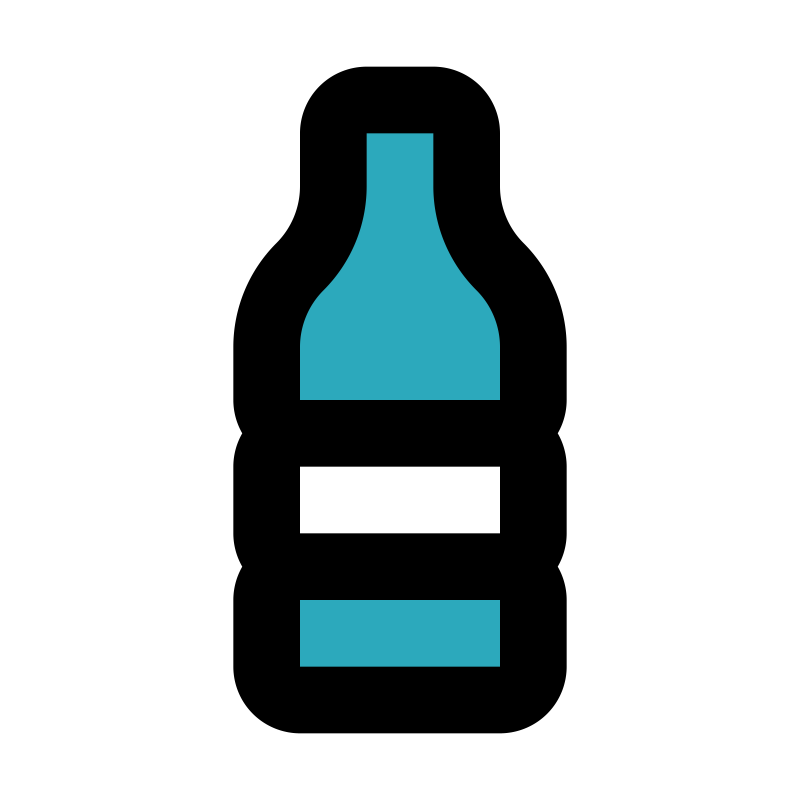
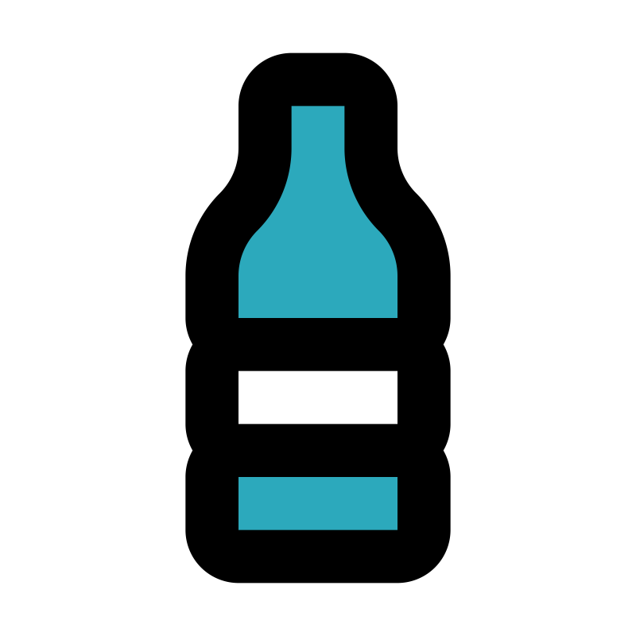

Goal 14


LET KRISTOFFER COOK🤓🤓🤓🤓
Rising ocean temperatures and acidification due to climate change are causing species migration, coral bleaching, and ecosystem disruptions. Sea levels are rising, threatening coastal economies. Global action is vital to mitigate these effects.
The effects


Millions of tons of plastic, chemicals, and oil spills enter our oceans yearly, harming marine life and entering our food chain. Turtles, seabirds, and fish are just a few species affected by this toxic legacy.
Make a change
We all have a role in protecting oceans. Reduce plastic use, support conservation groups, and advocate for sustainable policies. Together, we can protect and restore our oceans and make a lasting impact!

 
